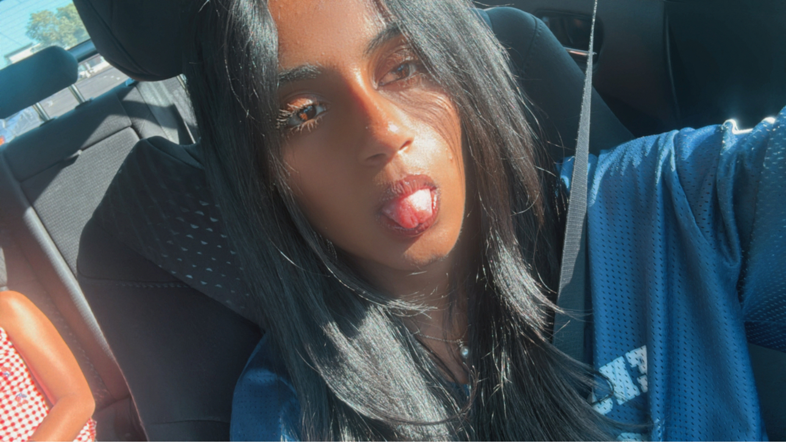

I’m a high school student deeply interested in computer science, artificial intelligence, and the ways technology can be used to understand and improve human decision-making.
My focus has been on building projects that combine machine learning, data-driven thinking, and real-world applications — especially in education and healthcare contexts.
Outside of coding, I’m the President of my Girls Who Code club, where I help lead workshops in Python, web development, and introductory data science. I also participate in Science Olympiad and independently explore AI research topics through personal projects and structured programs.
I’m especially interested in how neural networks can be applied to medical imaging and how AI systems can assist in early detection and decision support.
High School Student with a strong academic focus in mathematics, computer science, and scientific research. Maintains a 4.0 unweighted GPA and 4.21 weighted GPA while taking advanced STEM coursework.
President of Girls Who Code Club, where I design and lead technical workshops, mentor members in coding fundamentals, and help organize collaborative coding projects and events to increase student engagement in STEM.
Built multiple independent AI-driven systems, including a study optimization tool using machine learning principles and a structured scheduling system designed to improve student productivity and time management.
Active participant in Science Olympiad focusing on analytical and applied science events. Engaged in USACO preparation, independent AI research through Polygence, and collaborative STEM learning environments.
Volunteer at the American Cancer Society’s Discovery Shop, contributing to community support efforts and fundraising initiatives that support cancer research and patient assistance programs.
Designed and developed an AI-based scheduling system aimed at optimizing student productivity. The system analyzes time allocation patterns and prioritizes tasks based on urgency and workload distribution.
This project explored how machine learning concepts can be applied to behavioral data to improve daily planning efficiency.
Python • Machine Learning • Data Analysis • UX Design
Built a Convolutional Neural Network to classify benign versus cancerous heart tumor images using medical imaging datasets.
The model focuses on feature extraction from grayscale imaging data and applies layered convolutional filters to identify structural patterns relevant to tumor classification.
This project strengthened my understanding of deep learning architectures and their real-world applications in healthcare diagnostics.
Python • CNN • Deep Learning • Computer Vision • Data Science
I’m always interested in connecting with others in AI, research, and software development. Feel free to reach out if you want to collaborate or talk about projects.